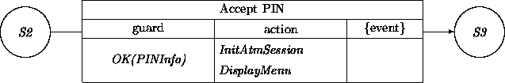
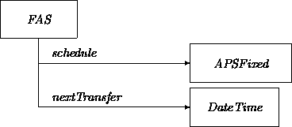

|
Chapter 10: Constructing a System Model |
In this chapter, we illustrate the synthesis of a target system model using the building blocks described in previous chapters.
The reader may wonder whether such an activity is necessary and, moreover, whether such an activity is still ``analysis'' or a transgression into the computational realm of design. It cannot be denied that constructing a model of an intended system has the flavor of design, at least to the extent that some commitments are made with respect to (logical) system architecture. At the same time, the relative concreteness of a model is an advantage for all parties involved. Analysts are forced to think through the demands of the customer from yet another perspective. The validity of a model can be checked by having analysts and customers mentally execute scenarios. Designers will obtain an abstract model that may be transformed into an executable realization.
We will present a ``vertical slice'' of an OO analysis, in a sequence corresponding to steps described in more detail in Chapter 12. We discuss:
We envision an ATM transaction menu that will be pulled up by a customer using a certain designated key. The menu will list several transaction services the branch offers. We will discuss several choices: an automated payments service, automatic overflow management, and overdraft protection. The customer will select one and run through a series of submenus to clarify and describe a specific transaction. We assume the usual ( circa 1993) ATM hardware configuration, minimally including a numeric keypad and a small CRT.
ATM as a subsystem refers to the user interface events on the actual ATM machine. The actions of putting in a card, collection and verification of same, plus entering the PIN number as additional verification of account person validity are examples. The transactions available on an ATM include deposits, withdrawals, balance verification and so on. In our vertical slice of the ATM subsystem, we will discuss card and PIN entry verification and the section of the menu system dealing with our set of transactions.
Bank as a subsystem is a repository for data and an agent of events from the perspective of the ATM subsystem. In this example, we will look at the data and events centered around the three transactions being modeled, automated payment service, automatic overflow management, and overdraft protection. The bank will play a server role in a client/server relationship, where the ATM is the client and the bank is the server. The bank will also maintain a registry of all account verifications involved in transactions as well as registering billing for the three services.
A customer can pay bills through an automated payment plan. The automated payment service offers a series of submenus by which the customer can initiate a payment plan where fixed amount and variable amount bills are paid automatically. The latter can occur by empowering a recipient to specify an amount due. The customer will be able to set time and amount constraints on all automated payments.
When clients select the automated payment service, they are asked to key in the account number of a payment recipient. Once this is verified, a client specifies fixed or variable payment, the timing of the payment (e.g., one time only, biweekly, weekly, monthly, yearly, any time), and if appropriate, the payment amount or a maximum limit amount. A series of submenus will be provided to further refine these choices if necessary. For example, if the customer specifies variable monthly, the customer would have an opportunity to set a payment date and to set a payment amount limit (a payment would have to be under this amount). After everything has been verified, the client will be asked to specify a start time (now, or some future date).
The bank plays a central role in the automated payment service. It will manage payments from the checking account on the appropriate designated dates. It will register and track all variable payment amounts, including registering the appropriate amount from the recipient, checking it against any constraints and paying it on the designated date (an event-driven transaction). The bank will also make regular or one-time-only payments of customer-stipulated amounts to designated recipients on designated dates (a stipulated transaction).
Customers may specify an account as a recipient of a payment using an automatic overflow management menu series. This enables a customer's savings account, another checking account, a child's trust account, a money market account, etc., to be the recipient of overflow amounts in the checking account. The client would enter a maximum checking account balance that, when reached, would trigger an automatic payment of the overage into the specified account.
The bank will again manage checking account balance constraints for automatic overflow management. This time a transaction resulting in a maximum overage will result in a triggered withdrawal/deposit into the designated account (wherever that may be).
A customer's checking account may be paid from a designated savings account in order to maintain a minimum balance. The client would enter an account number that acts as the ``protector'' account (i.e., the account that will pay the checking account each time a transaction would bring the balance below the minimum). Provided the protector fund continues to be well endowed with money, the balance will never fall below the minimum. This account will, of course, be verified. Then the minimum checking balance will be entered. If a pending transaction will put the account balance below this figure (which could be $500 or $0.05 or whatever), the designated ``protector'' account will immediately transfer funds up to the specified minimum maintenance amount.
The bank will keep track of the account checking balance and the balance minimum (and maximum if it exists). It will also keep track of the designated ``protector'' account balance. Additionally, it will register any transactions coming in against the checking account. If a transaction will put the checking account balance below its minimum, the transaction registry will immediately notify and withdraw the correct balance from the ``protector'' account. If the ``protector'' account does not have the necessary funds, it will register the notification for later action.
When the protector account does not have enough money to maintain the minimum checking balance, it will register this situation. When funds are available, it will immediately transfer the amount necessary to maintain the minimum if the condition still exists. An error will be registered as soon as the minimum is not maintained. When a transaction occurs and there is not enough in the checking account and the protector account cannot cover the minimum, an error will be registered leading to a charge by the bank for the overdraft. This will proceed on a transaction-by-transaction basis. When the protector account again has money it will automatically check the checking account balance and replenish it to the specified minimum.
A customer may ``protect'' the protector account. An example of this might be a checking account that is protected by another checking account, which in turn is protected by a trust account. Protection ``cycles'' where an account is protected by another account which is protected by the first account will not be allowed.
The narrative in the previous section explains the functionality to be supported in a high-level fashion, perhaps as produced by a marketing department. A first step in analysis is to extract scenarios, or use cases that describe the behavior of a system from an external user's perspective. (A user need not be human. It might be another system as well.) Use cases were introduced by Jacobson [2,3], who describes them as follows:
A use case is a specific way of using the system by using some part of the functionality. Each use case constitutes a complete course of events initiated by an actor and it specifies the interaction that takes place between an actor and the system. A use case is thus a special sequence of related transactions performed by an actor and the system in a dialogue. The collected use cases specify all the existing ways of using the system.
There are two forms of use cases. The ones illustrated here have the form of linear sequences or timethreads [1] describing the course of typical system-context interactions. An alternative version gives the interactions in the form of a tree. The branch points correspond to choices made by the user, with alternative continuations chosen by the intended system. These are more accurate for capturing all possibilities, and are necessary for capturing worst case performance requirements. The sequential format eliminates ``pathological'' continuations and is more likely to illustrate how a user's intention is to be achieved.
We provide minimal sketches of the three principal use cases. The details are mainly dreamed up, educated guesses that are not strictly justified by the requirements. In reality, approval from a customer for such extensions is to be obtained early on to avoid more costly rework in a later stage.
We use templates for structuring the predominantly English descriptions. These ``structured'' reformulations of a requirements document help prepare for more precise graphical descriptions.
A vocabulary superficially corresponds to a data dictionary. However, while a data dictionary prepares for the definition of data structures, a vocabulary prepares for the definitions of classes and related constructs.
We provide structured descriptions of some classes as preparation for their characterization in our graphic formalism. (We omit for now similar treatments of ensembles, relations, and parametric instances.) Later on, in design, we will reformulate graphic notations in our textual ODL design language, which will in turn be reformulated into a target programming language. All these reformulations force us to rethink, each time from a different perspective, what the task is and how it is to be solved.
A systematic attack on class specifications would describe in turn each relevant class, providing for each a static and dynamic characterization. Instead, we proceed by elaborating material in a ``natural'' way, driven by the use cases. These examples illustrate how an analyst may traverse the analysis space in an associative manner. A CASE tool would help track and order these activities.
To begin, we exploit and extend the description of an ATM as given in Chapter 5. The following fragment of the transition network is relevant for dealing with our use cases:
In the S2 -- S3 transition, we can do more than just display the general menu. Since the ATM card has been read successfully and a correct PIN has been provided, the owner of the card (the client) may be determined. Other information, including which bank issued the card and which branch is the ``home'' of the client may be determined as well. At this point, a session log is created that contains the client/customer, the date-time, and all transactions. All these initializations are done by InitAtmSession. Each menu choice in S3 by the customer will lead into a subtransition network that will ultimately lead back to S3:

When the customer has chosen the Automated Payment Service (APS) option, an instance is created that describes the desired payment service. There are two similar, but slightly different services; one in which the paying client determines a fixed amount that should be transferred each time, and the other one in which the recipient stipulates each time what the to-be-transferred amount should be:
The class structure bundles commonalities in the class APS. This allows us to create two subclasses that represent, respectively, the fixed and variable payment schedules. The subclasses APSFixed and APSVariable exclude each other (on the fix/var attribute), and together form a partitioning of APS. The two classes also differ in whether a fixed amount or a maximum amount is indicated per transfer.
Next we deal with the machinery that will trigger the proper transfers, starting with the fixed case. For each automatic schedule, an instance of FAS (Fixed Automatic Schedule) is created:

An instance of this class has a clock triggered transition that will rejuvenate itself at each activation. The initial value of the attribute nextTransfer will be obtained from the customer during the ATM interaction. The transition network of a FAS is:

The expression $DateTime$ in the guard refers to the current time.
When the current time has progressed beyond the time indicated
by nextTransfer the transition Create Transaction will fire
up.
The activity ResetNextTransfer expands into the description:
nextTransfer' = nextTransfer + self.schedule.schedule
The CreateTransfer activity may consist of creating an instance of the class Transfer introduced in Chapter 3:
CreateTransfer has access to all the information to properly initialize a new instance of Transfer. A naive transition network for Transfer illustrates how the transaction can be effectuated:
This approach assumes that the Account class transition network supports a Subt(ract) and an Add transition.
An instance of Transfer is prototypical of transient objects. It has been initialized when it is entering S1, it executes during the S1 -- S2 transition, and then it disappears.
This story is a simplification. System and/or network failures have not been dealt with. Also, logging of a transfer (in addition to logs maintained by the accounts) has been omitted. Observe as well that we have ignored the little detail of how to handle the situation when an account has insufficient funds for a transfer. When we discuss the overdraft protection use case, we will expand the transition network of Transfer to be more realistic.
The VAS (Variable Automatic Schedule) is similar to the FAS:
Again we have a similar transition network:
The only difference is that the action CreateTransfer must access
the self.to-account through a service transition invocation of the
form
nextPaymentFrom(self.to, self.from)
in order to determine what to fill in for amount in a
Transfer instance. Thus we assume that a certain subclass of
Account supports the nextPaymentFrom transition as a service
that produces the amount to be transferred by the requesting account.
In summary, the transition subnetwork of ATM that deals with this use case either needs to generate an instance of APSFixed together with an instance of FAS for the case of fixed periodic payments, or needs to generate an instance of APSVariable together with an instance of VAS for the case of variable payments.
We assume here that the customer has set up a session with an ATM and that a subtransition network has been entered as a result of selecting the Automatic Overflow Management option. The use case requires the customer to provide an overflow account and a maximum amount to be maintained by the account. A reasonable choice for recording this information is to add optional attributes to Account:
Instead of adding these optional attributes, we could have created a subclass of Account, such as AccountWithOverflowManagement, and added these fixed attributes to this subclass. The customer's regular account would be discontinued after copying over all attributes into a new instance of AccountWithOverflowManagement.
The desired functionality is obtained by adding the following transition network:
The action CreateTransfer again has access to all the information to
initialize an instance of Transfer that will take care of the actual
operation. The amount to be transferred is obviously:
self.balance - self.maxForAccnt.
An account must be protected so that it cannot fall below a certain
level. The level is determined by the bank as a default or can be
strengthened by the client. For example, a limit set by a bank for a
checking account is usually $0. The limit can be negative as is the
case for credit lines. However, a client can stipulate that an
overdraft protection service should be activated at a higher level
than the bank's limit, for instance to avoid penalties. At the same
time a level specified by a customer should be less than an overflow
level, if this service is used. Thus, we have as an invariant:
bank-minimum-level <= client-minimum-level < client-overflow-level.
This service will work provided a protecting account is able to transfer funds. Since a protecting account may itself be protected, we will model a transfer from a protecting account as a request that is generated when a balance falls below either the minimum level specified by the client or the minimum level specified by the bank.
We are assuming that an Account has an attribute bankMin that expresses the minimum set by the bank and an optional attribute clientMin that expresses the minimum specified by the client. By adding an optional protecting account, we obtain:
In order to model the desired behavior, we revisit the transition network of a Transfer. The guard in the Adjust-Accounts transition must be strengthened and the transition must be embedded in a network.
To simplify the diagrams, we ignore a minimum specified by a
client. Thus the overdraft protection service will be triggered here
only when the minimum specified by the bank would be surpassed.
By strengthening the guard from True into:
(self.from.balance - self.from.bankMin) >= self.amount
we get the guarantee that the Adjust-Accounts transition does not produce
an overdraft. The resulting transition network is as follows:
The dynamic waiting in state S4 may be surprising. But remember that while doing analysis, the desired functionality is described concisely without worrying about performance.
In summary, the transition subnetwork of ATM that deals with this use case needs to fill in the optional attributes into an account in order to start the service.
Several extensions to class Account have already been described. Here, we will look at the extensions that must be made in order for an account to be the recipient of automated payments.
First we give the class Account the optional attribute nextCharge. This attribute associates for each account in the set what its next payment should be. This information is accessed periodically via the service transition nextPaymentFrom. We omit the mechanism that determines the amount that is to be transferred for every account in the set and for every pay period:
An example transition specifies that every pay period, requests from accounts that have automated variable periodic payments are serviced:
We have many ensembles in our domain of interest. For example, we have so far been quite casual regarding accounts. We have suggested that accounts are residing in an unstructured ``ocean''. To be more realistic, we could have made distinctions between locally maintained accounts, accounts belonging to the American Bank, or another bank's accounts. These distinctions enable different services to be invoked for different types of accounts.
In Chapter 9 we described an ATM from an ensemble perspective. Here, we will add some details, beginning with a few new properties necessary to support the use cases. First, class ATM must be equipped with the following new attributes:
All use cases are realized via subtransition networks that start in S3 and that lead back to S3. They all follow the pattern of:
So far, our characterizations in the dynamic model
have been high level, essentially ignoring the details where
ensembles have to be acknowledged. For instance, in the transition network
of an ATM in Chapter 6, we wrote bluntly:
Take in card,
Read strip &
Display PIN request
At the same time, we described an ATM as an ensemble
with constituents (among others):
ATMInput,
ATMOutput,
CardReader.
A more careful and precise elaboration of ``Take in card'' requires
describing these activities through interactions via events between an
atm and its constituents.
We will illustrate an interaction inside an ATM ensemble, using the Idle -- S1 transition from Chapter 6.
None of the actions on this transition are actually performed by the ATM ensemble. They are controlled by its constituents. The ATM ensemble itself need not to be involved in manipulating the card. The only data of interest to the ATM is the strip information. The display operation is delegated to another constituent. Consequently, we arrive at the following interactions with the constituents:
We assume here that the expectation Get(stripInfo) is matched by an event generated by the ATMInput constituent, and dually the Out(PINRequest) will be picked up by the ATMOutput constituent.
Although the context has been quite sketchy, we have assembled most of the salient ingredients of a model of an ATM.
Constructing a model requires the definition of some (parametric) instances. The use cases apply to any ATM and to any eligible set of accounts. A minimal model consists only of ATMs and Accounts. ATMs may be described as parametric instances:
In order to flesh out the model, we must provide at least stubs for the constituents of atm_X. We leave this as an exercise. Additionally, the constituents of atm_X and the atm_X ensemble itself have to be ``welded'' together. Their interactions should be described as point to point communications instead of broadcasted events. For details, see the interaction diagrams in Chapter 6 where they have been introduced and applied to an ATM.
The next step is to add parametric instances of Account, adjoining all relevant classes, ensemble, and relationship descriptions.
The account account_X will play the role of the primary account selected by the customer for respective uses cases. Similarly, we will have account_Y as recipient for periodic payments and account_Z for overflow account and protector account.
The final step of analysis is model validation. However, machine execution of the model is not possible. Transition actions in the networks have not been formulated as algorithms but are instead in English (sometimes as structured English precondition and postcondition formulations).
To show that the model satisfies the use case scenarios, we may role play the objects in mental walk-throughs. The use cases we formulated earlier are only the bare minimum. Exception situations and corner cases have to be investigated. How does the model behave when a customer indicates that the recipient account is the same account as the one that will be charged for the automated payment service? Is it acceptable to have automated payment services between two pairs of accounts in both directions?
Stress testing the model may reveal ambiguities or incompleteness in the requirements. Identifying these errors in an early stage will save substantial repair costs later. Prototyping efforts may be employed when there are doubts about correctness. These activities may result in the iteration of various analysis tasks, especially when analysis (or development generally) has been performed in vertical slices.
In this chapter, we have outlined an approach to the construction of a model for a desired system using notions developed in the previous chapters. The phase in which semiformal classes, ensembles, and relationships are developed is preceded with a phase that relies on structured English to describe use cases, subsystems and a vocabulary. Of course, we do not claim that these two phases (and their subactivities) necessarily be performed in a breadth-first, waterfall manner. Vertical slices and iterations can be done as necessary (see Chapter 12).
The model produced by an analysis relies on carefully constructed building blocks. When classes have been defined with reuse in mind, then they often need to be subclassed to fit the needs of a particular target system (see Chapter 8).